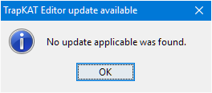

The basics
Installing the program
The program itself needs no installation.
However, it depends on Java Runtime 1.8, which is usually already installed but, if not, is available from
Oracle, at http://java.com/en/download/.
Running the program
Once you have downloaded the program, running it should just be a matter of double-clicking the jTrapKATEditor.jar file.
If installed correctly, the Java Runtime should execute the program.
The program can be run from the command line using the following command (assuming the java executable is in your PATH):
java -jar jTrapKATEditor.jar.
Overview
This section briefly runs through how to use the program without stepping through each feature.
The next section covers each part of the program in more detail and then
the section after explains each element of the user interface.
Finally, there is some legal stuff,
covering the (lack of) warranty, the licence and source code location.
Note that familiarity with both the TrapKAT and the TrapKAT manual are assumed (though some references are supplied).
The rest of this section also assumes you have the program installed and it starts up okay.
Setting up a new kit layout
Imagine you have a new sound source for your TrapKAT and the layout is similar but not exactly the same as another kit
you already have mapped up.
Let us assume you have no reason to change the sound source to match the TrapKAT and that the TrapKAT has a spare user kit.
Here are the steps you will need to follow to set up a new kit layout:
- Get the current TrapKAT All Memory Dump onto your computer.
- Edit the dump with jTrapKATEditor.jar to copy the similar kit and make changes.
- Save the edited dump.
- Send the updated dump back to the TrapKAT.
The first and last points are outside the scope of what jTrapKATEditor offers and differ substantially depending on whether you are running
on Windows, MacOS or Linux.
For Windows, I still recommend MIDI-OX for receiving and sending MIDI System Exclusive dumps such as these.
Receiving the dump using MIDI-OX is straight forward and no special settings are needed.
The transmit settings for sending the dump - which are "delicate" due to timing issues - are given at the bottom of the
jTrapKATEditor.jar main window.
Load the dump
Once you have got the TrapKAT All Memory Dump onto your computer,
run jTrapKATEditor.jar.
It starts up with some rather useless default values but we are going to ignore those and load the dump.
You can use the File menu, Open... entry
or press Ctrl/Cmd O.
This will bring up the following dialog box (or appropriate windowing system-specific flavour).
You will notice that it filters for Sysex files. It expects an extentions of "syx" to be used.
If you did not save the received dump with that extension, I would recommend doing so.
I also very strongly recommend having a separate "working copy" file that you use for testing new and changed layouts.
Select the file you saved and press Enter or click Open.
Copy one kit to another
The main display should now look similar to the following.
Note that the Kits & Pads main tab is selected as is the Pad Details subsidiary tab.
As this was a Version 4 dump (indicated in the title bar as "(V4)" after the file name), the More Slots tab is available
as well as Kit Details.
For this example, we will leave the tabs alone.
Just below the Kits & Pads tab itself is the Select Kit drop-down.
Select the base kit that is going to be copied.
The pads now show the values for this newly selected kit, including the kit name.
We want to copy this kit to one of the spare ("Demo Kit #XX") entries.
For this, select Edit->Copy Kit.
This places a copy of the kit on the system clip board, so it can be pasted elsewhere (even after closing the program).
Next we need to switch kits and do just that.
So, use the Select Kit drop-down to switch to the free kit and then
Edit->Paste Kit....
This pops up and dialog asking for confirmation of the action, as shown (with appropriate names and numbers).
Select Yes and the kit is overwritten with the copy.
Note that the kit number is held for each kit - if you send a single kit to the TrapKAT, it uses this to know
which user kit to write into.
Notice the title bar now has "[*]" at the end - indicating the file being edited has been altered but not saved.
Change the kit layout
We chose the source kit as "similar to but not the same as" what we need.
The things we want to alter are as follows.
- The kit name
- The way the hi-hat works
- The pads for china and ride
- The note for the kick drum
Change the kit name
Changing the kit name is as simple as entering the new name in the Name text field. Done!
Notice that the kit is marked "Edited" next to the Select Kit drop-down.
Set up the new hi-hat
For this example, assume the old kit only had "closed" and "bell" hi-hat sounds,
these mapped to pads 1 and 11.
For the new kit, we now have "closed" and "variable (CC4)" hi-hat sounds we want to trigger from pad 1
and the "bell" sound is unchanged.
This means pad 1 needs to be marked as a hi-hat pad and to trigger two notes: one for when the hi-hat pedal is closed and one
for when the hi-hat pedal is between (nearly) closed and fully open.
We will assume the kit was already set to use a variable CC4 hi-hat pedal.
The steps are as follows:
- Set pad 1 to be a hi-hat pad
- Select pad 1
- Set slot 2 to be the variable note trigger
Which pads are considered hi-hat pads by the TrapKAT is an interesting subject examined in detail later.
For now, look near the middle of the window, where you should see a set of four drop-downs.
Hovering with the mouse gets a short tooltip.
Use the first box (although that is not important) to select pad 1.
Now use the Select Pad drop-down to select pad 1 (if it is not already selected).
Notice that the pad is marked "Edited".
(Note also the Flags for the pad now have flag 7 checked.)
Finally, we have to add the "between (nearly) closed and fully open" note.
For a hi-hat pad, odd numbered slots represent closed sounds and even are when the pedal is not fully closed.
So the new note needs to go into slot 2.
If you click the slot 2 dropdown, you will see the following.
For this example, we do not need to use the special values, just enter the note.
I use note numbers - they are explicit and do not have octave offset confusion.
I will use note 66 in this example, so that gets entered in the text box.
And that is the hi-hat done.
Swap the China and Ride triggers
Whilst this is pretty easy on the TrapKAT, remembering which edit mode to use and which pads to hit still takes some doing.
All that is needed in jTrapKATEditor is to select the first trigger pad, then use
Edit->Swap Pads or Ctrl/Cmd B.
Switch to the second pad and repeat the action.
If you use the menu, you will see there is a checkbox next to the Swap Pads menu option.
This is checked when you have selected the first pad and are ready to swap with a second pad by selecting the option again.
Note that you can also swap pads between kits, although this is more complicated, especially if one of the pads involved was a hi-hat pad.
See later in the help.
Set the kick note
Similarly to setting the hi-hat second slot, this is just a matter of entering the required note in the Bass pad
text box.
Save the edited kit
Now that the changes have been made, they can be saved to disk.
You can either save the entire All Memory Dump or you can save just the kit that you have been working on.
As we were working on an All Memory Dump, saving as a kit would need a name specified.
For testing a single kit, it is probably worth doing as the kit sends to the TrapKAT more easily as it is smaller.
The Save File dialog will appear with a suggested filename based on the kit name.
Having saved to a new single kit file, that file becomes the current file being edited.
The shortcut for save - Ctrl/Cmd S - shown against "Save All Memory" above
will then be against "Save Current Kit".
Features
Getting Help
Look here first!
I guess, if you have read this far through the help, you have not found what you were looking for.
However, I would suggest having a good look through the previous sections as they provide a useful
general explanation of how the program works and how to use it.
This section provides a wider overview of the areas of the program (more "what" than "how to").
This is followed by an in-depth guide to the user interface, again focussed on what the components do.
You should then be able to use your knowledge of how the TrapKAT works along with the TrapKAT manual
to work out how to use the program to do most of what is possible.
Of course, there may be things the program is doing that you do not expect - possibly even bugs.
I guess here is where I have to mention the warranty -- see Help->Warranty...
for the disclaimer.
Staying up to date
The first thing to do if you hit a snag is make sure you can reproduce the problem using the latest version of the program.
You can make sure you have the latest version using Help->Check For Update....
If this says "No update applicable was found." then you are up to date.

Otherwise, you will be offered the chance to go to the project page to read about the latest version.
From there, you can navigate back to the download page.
If you have a permanent internet connection on the computer you run the editor on, you are strongly recommended to use the automatic update checker.
This is toggled on and off by Help->Check Automatically.
The program will check automatically at most once every day.
If it finds an update available, it will display the available update notice shown above.
Asking questions and reporting issues
The most effective way to get an answer to a problem is to post in
the AlternateMode forum in the thread for this editor.
Always look under Help->About
to get the version details and include the details in your post.
This ensures anyone looking at your post in future knows which version it relates to.
Try to explain the steps you have taken with the TrapKAT and with the TrapKAT editor software clearly,
saying what you expected to happen and what actually happened.
I need to be able to reproduce the problem with my set up if I am to have any hope of either answering
a question or fixing a bug, so do please take the time to explain clearly.
(I do realise it takes some effort -- it took me days to pin down the last bug clearly enough I could fix it:
in fact it turned into three related bugs, which was why it was so confusing!)
Note that I can, unfortunately, only test with a TrapKAT V4 now.
As the program is Open Source (see Help->Licence...),
you always have the option of reading the code and trying to identify possible fixes or improvements yourself.
The Github project page
is the best place to find further information.
Program Configuration
There is little in the way of configuration visible to the user.
The only option is how to display note values -
Tools->Options->Display MIDI Notes, choosing from
As Numbers (the MIDI note number), As Names (C3=60) or As Names (C4=60)
(showing the note name with Middle C getting the indicated name).
In addition to the setting for automatic updates, mentioned earlier,
the program stores two more values relating to the update process.
- Last Update Time
-
This holds the time that the last automatic or manual update check was run.
The value is displayed in Help->About, as shown above.
- Last Ignored Version
-
This is used by the automatic update checker to avoid prompting for an ignored version.
Checking manually bypasses this value and always prompts if it finds a newer version (but lets you ignore again, of course).
Finally, there are two further internal settings that aim to make life easier between runs of the program.
- Current Working Directory
-
This tries to keep track of the last folder or directory which you used for a file operation, so it is what you are offered next time.
- Window Location
-
This keeps track of the position of the window, so on start up the window appears where it was when you last closed the program.
All of the settings are held per user in a file called jTrapKATEditor.xml, the location of which is determined by the operating system.
If something goes badly wrong and the program appears not to start, you can try renaming or deleting this file - check the program is really not running first, though.
Creating and Loading
The File menu allows you to create TrapKAT V3 and TrapKAT V4 dumps from scratch, using
New (V3) or New (V4) respectively.
You can also load complete memory dumps, global memory dumps and individual kit dumps, all using the
Open menu item.
The only real use of New is to make using Open easier for
global and kit dumps that you want to edit in isolation from an all memory dump.
Open prompts for the file to be opened and,
after confirming with you that losing any unsaved changes that would be overwritten is okay,
proceeds to load the file.
For example, if you have edited kit values and load a global dump, you do not get prompted as no changes have been made to global memory.
However, loading another kit dump for the edited kit would prompt.
Saving
The File menu allows you to write out your changes.
You can choose to save back to the last opened file of the appropriate type or save the current kit, global memory or all memory to a specific file.
When you start or use one of the New menu options, the editor considers that it has no file currently being edited and you must choose where to save edits.
When you Open, if no file is being edited or if the opened file is an all memory dump, the opened file becomes the current file.
The current file, including the version and overall change state, is shown in the application title.
If the current file is a global dump, loading a kit file means the editor considers that it has no specific file being edited, so you must choose what to save.
If the current file is a kit dump and you load the same numbered kit, that kit becomes the current file.
If the current file is a kit dump and you load the a different numbered kit - either into the current kit or its own kit - the editor considers that it has no specific file being edited again.
If you are editing an all memory dump, you can load in global and kit dumps without changing what the editor considers the current file.
No current file being edited
Current file is all memory dump
Current file is global dump
Current file is kit dump
This usually ends up being exactly what you'd expect...
Converting
Editing Kit Details
Editing Pad Details
Editing Global Details
Legal
Warranty
Disclaimer of Warranty.
THERE IS NO WARRANTY FOR THE PROGRAM, TO THE EXTENT PERMITTED BY APPLICABLE LAW. EXCEPT WHEN OTHERWISE STATED
IN WRITING THE COPYRIGHT HOLDERS AND/OR OTHER PARTIES PROVIDE THE PROGRAM "AS IS" WITHOUT WARRANTY OF ANY
KIND, EITHER EXPRESSED OR IMPLIED, INCLUDING, BUT NOT LIMITED TO, THE IMPLIED WARRANTIES OF MERCHANTABILITY AND
FITNESS FOR A PARTICULAR PURPOSE. THE ENTIRE RISK AS TO THE QUALITY AND PERFORMANCE OF THE PROGRAM IS WITH YOU.
SHOULD THE PROGRAM PROVE DEFECTIVE, YOU ASSUME THE COST OF ALL NECESSARY SERVICING, REPAIR OR CORRECTION.
Limitation of Liability.
IN NO EVENT UNLESS REQUIRED BY APPLICABLE LAW OR AGREED TO IN WRITING WILL ANY COPYRIGHT HOLDER, OR ANY OTHER
PARTY WHO MODIFIES AND/OR CONVEYS THE PROGRAM AS PERMITTED ABOVE, BE LIABLE TO YOU FOR DAMAGES, INCLUDING ANY
GENERAL, SPECIAL, INCIDENTAL OR CONSEQUENTIAL DAMAGES ARISING OUT OF THE USE OR INABILITY TO USE THE PROGRAM
(INCLUDING BUT NOT LIMITED TO LOSS OF DATA OR DATA BEING RENDERED INACCURATE OR LOSSES SUSTAINED BY YOU OR
THIRD PARTIES OR A FAILURE OF THE PROGRAM TO OPERATE WITH ANY OTHER PROGRAMS), EVEN IF SUCH HOLDER OR OTHER
PARTY HAS BEEN ADVISED OF THE POSSIBILITY OF SUCH DAMAGES.
Source Code
The source code for this program is available to you for any purpose as permitted under the GNU General Public Licence version 3.
To access the source code, please see https://github.com/pljones/jTrapKATEditor.